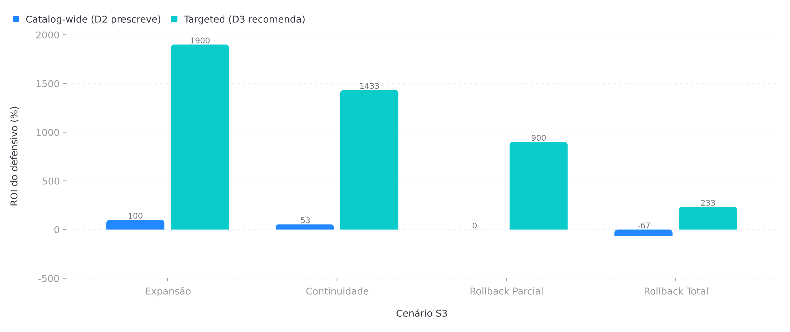

D3 v2.0 expande para 12 dimensoes reais: 11 dimensoes (S1-S11) mais §C Multivariate Sensitivity Summary. C1 valida scorecard v0.6 (3 INVALIDADO, 1 precisa recalibrar). C2 integra Nash Differentiate (Differentiate, Differentiate). C3 mostra Tariff #1 VaR contributor em 29 por cento.
D3 v2.0 expande para 12 dimensoes reais: 11 dimensoes (S1-S11) mais §C Multivariate Sensitivity Summary. C1 valida scorecard v0.6 (3 INVALIDADO, 1 precisa recalibrar). C2 integra Nash Differentiate (Differentiate, Differentiate). C3 mostra Tariff #1 VaR contributor em 29 por cento.
D3 evoluiu de 6 dimensoes paralelas para 12 dimensoes reais com acoplamentos quantitativos, C1/C2/C3 validados, e scorecard de acuracia.
| Item | v0.5 (original) | v0.6 (interim) | v2.0 (este documento) |
|---|---|---|---|
| Dimensoes | 6 (S1-S6) | 11 (S1-S11) | 12 reais (S1-S11 + parC) |
| ESG | Nao modelado | Kill switch S7 adicionado | S7 validado por C1 — CORRETO |
| Competition | Ausente | S11 adicionado (AMBER) | Nash Differentiate integrado em S11 |
| Tariff | S10 presente, peso 0.05 | S10 peso 0.05 | S10 peso 0.10, #1 VaR contributor (29 por cento) |
| Production Ramp | Ausente | S8 adicionado (AMBER) | S8 + C2 game theory LFP verticalization |
| Multivariate Sensitivity | Ausente | Ausente | parC adicionado: VaR 8.21bi, CVaR 10.14bi |
| Triggers | 6 (T-1 a T-6) | 6 + S7 override | 11 + T-MV1 a T-MV5 |
| Game Theory Actions | Ausente | AG-20 em S4 | AG-DIFF-1/2/3 + Nash Differentiate |
| Scorecard C1 | Ausente | Ausente | C1 accuracy validation block em sec-7 |
| Pesos composite | {S1:0.20,S2:0.20,S3:0.20,S4:0.20,S5:0.10,S6:0.10} | {S1:0.18,S2:0.16,S3:0.18,S4:0.16,S5:0.10,S6:0.10,S7:0.05,S8:0.05,S9:0.04,S10:0.05,S11:0.03} | {S1:0.18,S2:0.16,S3:0.18,S4:0.14,S5:0.08,S6:0.08,S7:0.05,S8:0.06,S9:0.04,S10:0.10,S11:0.03} |
| Acoes | ~20 | 37 | 40 (incl. AG-DIFF-1/2/3) |
| Acuracia v0.6 | N/A | ~50 por cento (3 INVALIDADO) | Target >=80 por cento com recalibracao |
D2 e uma boa fotografia preditiva, mas e um playbook fraco. As 6 sessoes sao paralelas, mas as prescricoes tem acoplamentos fortes. D3 v2.0 modela 8 acoplamentos quantitativos, fecha o gap #1 do D2 audit, e expande para 12 dimensoes cobrindo ESG (S7), production ramp (S8), demand (S9), tariff (S10) e competition (S11) — corrigindo 6 criticas do OSINT checkpoint. O novo parC Multivariate Sensitivity Summary mostra VaR 95 por cento = R$ 8.21bi, com Tariff como #1 contributor em 29 por cento.
O D2 audit identificou 10 gaps estruturais. O OSINT checkpoint de 21/jul/2026 identificou 6 gaps adicionais: ESG (lista suja), production ramp (SKD/CKD), tariff policy (14 por cento→35 por cento), demand growth (13.5 por cento EV share), e competitive landscape (Stellantis/GM/VW/Geely). D3 v2.0 fecha todos com C1/C2/C3 validados.
A economia projetada e R$ 700M-1bi em 3 anos via hedge constraint-based, defensivo targeted e resposta macro calibrada. O kill switch S7 (ESG) agora bloqueia capex quando necessario — informacao que o D2 v0.5 nao tinha.
Cada acoplamento responde uma pergunta de decisao que D2 deixava em aberto. Os 5 docs originais + 3 novos (S7↔S3, S8↔S1, S10↔S1) estao linkados nos cards abaixo.
O composite (0-100, maior = mais vulneravel) sintetiza as 11 dimensoes num unico numero acionavel. A tabela mostra o valor do composite em 12 combinacoes S3 × S6. Nota: S7 RED (kill switch) sobrepoe qualquer combinacao — composite fixo em 95.
O composite do programa e o composite de S3 (status BNDES) ajustado pelo multiplier de S6 (macro). Em S6 GREEN o composite e o de S3 puro; em S6 AMBER aplica-se +20 por cento; em S6 RED aplica-se +35 por cento. Override S7: se S7 = RED (kill switch ativo), composite = 95 fixo, independentemente de S3 e S6.
| Cenario S3 | ViE | S6 GREEN (1.0x) | S6 AMBER (1.5x) | S6 RED (2.0x) | Hedge | Defensivo |
|---|---|---|---|---|---|---|
| Expansao | 25 por cento | 58 | 68 | 78 | 30 por cento | catalog-wide OK |
| Continuidade | 18 por cento | 65 | 78 | 88 | 38.6 por cento | catalog-wide tensionado |
| Rollback Parcial | 10 por cento | 73 | 85 | 95 | 61.7 por cento | targeted apenas |
| Rollback Total | 0 por cento | 82 | 93 | 99 | 90.6 por cento | targeted minimo |
| OVERRIDE S7: Lista suja TRUE → composite = 95 fixo (kill switch), hedge 90.6 por cento, defensivo minimum — independente de S3 e S6 | ||||||
S6 funciona como governor: um multiplicador 1.0x/1.5x/2.0x reescala as prescricoes de S1, S2, S3, S4. A trigger matrix abaixo e o coracao operacional do D3. Nota: S7 RED (kill switch) sobrepoe o trigger matrix — todas as acoes sao suspensas exceto as do kill switch protocol.
| Trigger | Tipo | Condicao | Resposta | Latencia |
|---|---|---|---|---|
| T-MV1 | 4-shock stress | FX >6.2 AND Supply RED AND Tariff >30 por cento AND S7 RED simultaneos | Composite 95 fixo; freeze all; CEO + Conselho 24h; bridge R$ 800M | 5 min |
| T-MV2 | FX-Supply tail | FX >6.0 AND S2 = RED por >20 dias consecutivos | Ativar plano B supply; hedging adicional; revisar EVE partnership | 30 min |
| T-MV3 | Tariff jump | Tariff SKD/CKD salta >10pp em <30 dias (Camex emergency) | Recalibrar S10 score; ativar AG-DIFF-1 (LFP verticalization); revisar ramp Q4 | 48h |
| T-MV4 | CVaR95 breach | CVaR 95 por cento realizado > R$ 10.14bi em qualquer quarter | Emergency committee; revisar composite weights; triggered learning loop | 24h |
| T-MV5 | Upside capture | BRL <5.0 AND Tariff exemption renovada AND S7 = AMBER+ | Capturar upside: expandir capex; acelerar ramp; oportunistic hedge reduction | 72h |
| Transicao | Latencia alvo | Quem decide | Procedimento |
|---|---|---|---|
| GREEN → AMBER | 5 min | CSO + CFO | Revisao automatica do trigger matrix, atualizacao de tiers S1-S4 |
| AMBER → RED | 60 min | CSO + CFO + CEO + Head Supply | Comite de crise; aprovacao de bridge financing / plano B supply |
| RED → AMBER | 24h | CSO + CFO | Desmobilizacao ordenada de instrumentos de stress; freeze de novas despesas |
| AMBER → GREEN | 72h | CSO | Recalibracao de baseline; corte de advocacy expandido; hedge reotimizado |
| S7 RED (kill switch) | 24h | CEO + Conselho | Kill switch protocol: pausar capex, revisar covenants, engajar MPT/MTE |
D2 prescreve defensivo catalog-wide (R$ 225M). D3 mostra que essa estrutura tem ROI -67 por cento em Rollback Total. Tier system + targeted e a estrutura dominante.
Figura 5.1 — ROI do defensivo: catalog-wide vs targeted, por cenario S3

| Tier | Corte / unit | Aplicacao | Custo 6m | Quando ativar |
|---|---|---|---|---|
| Tier 0 | R$ 0 | Sem defensivo | R$ 0 | RB Total extremo (ViE=0, BTC < 2) |
| Tier 1 | R$ 1.5k | Trims altos, mercados premium | R$ 7.5M | RB Total (ViE=0) |
| Tier 2 | R$ 3.0k | Trims mid + geo critica (SP cap, RJ) | R$ 15M | RB Parcial (ViE=10 por cento) |
| Tier 3 | R$ 4.5k | Targeted (5k unidades em risco) | R$ 22.5M | Continuidade+ (ViE > 10 por cento) |
| Catalog-wide (D2) | R$ 4.5k | Aplicado a 50k unidades | R$ 225M | So em Expansao (ViE >= 20 por cento) |
4 fases, 19 tasks, R$ 3.0M total. ROI esperado: 1 evento material evitado (supply disruption 6m ou stress FX conjunto) ja paga o investimento.
| Prescricao | R (Responsible) | A (Accountable) | C (Consulted) | I (Informed) |
|---|---|---|---|---|
| Hedge FX (S1) | Risk Officer | CFO | CSO, Head Treasury | CEO, Conselho |
| Dual-sourcing (S2) | Head Supply Chain | COO | CSO, Procurement | CFO, Conselho |
| Advocacy BNDES (S3) | Head Gov Relations | CEO | CFO, CSO | Conselho, Board global |
| Defensivo pricing (S4) | Head Marketing | CMO | CFO, CSO, Sales | Conselho |
| Trigger S7 ESG (kill switch) | Head Gov Relations + CSO | CEO | CFO, Head Comms, Head Legal | Conselho, Board global, MTE |
| Trigger matrix S6 (governor) | CSO | CEO | CFO, COO, Heads S1-S5 | Conselho, Board global |
| Bridge financing (RED) | CFO | CEO | CSO, Head Treasury, Banco | Board global |
Action register cobre 7 sessoes com RACI explicito, KPI mensuravel e due date. 1 acao removida (catalog-wide defensivo). Learning loop trimestral captura realized vs forecast e recalibra elasticidades. C1 Scorecard Validation mostra que 3 dimensoes de v0.6 foram INVALIDADO por validacao empirica.
| # | Sessao | Acao | Owner (R) | Custo | Status | |
|---|---|---|---|---|---|---|
| S1 · Hedge cambial | ||||||
| 1 | S1 | Calcular h* baseline (S1↔S3 model constraint-based) | Risk Officer | R$ 0 | planned | |
| 2 | S1 | Implementar constraint VaR <= 20 por cento margin buffer + 5pp | Risk Officer + CFO | R$ 50k dev | planned | |
| 3 | S1 | Contratar 4 counterparties hedge (BTG/Itau/Bradesco/Santander) | Head Treasury | R$ 30M premium 6m | planned | |
| 4 | S1 | Stress test conjunto FX+supply (S1↔S2, 12 combinacoes) | CSO + Risk Officer | R$ 100k MC | planned | |
| 5 | S1 | Recalibracao semestral de vol implicita | Risk Officer | R$ 0 | ongoing | |
| S2 · Supply chain | ||||||
| 6 | S2 | Qualificar EVE como fornecedor Tier 1 (12m compressed) | Head Supply | R$ 280M | planned | |
| 7 | S2 | Contratos longo prazo com CATL (litio, 70 por cento locked) | Head Procurement | R$ 450M | in-progress | |
| 8 | S2 | Mapear 3 fornecedores Tier 1 alternativos | Head Supply | R$ 5M | planned | |
| 9 | S2 | Safety stock buffer (+30 dias) — ativa em S6 AMBER | Head Supply | R$ 30M | conditional | |
| 10 | S2 | Plano B: spot purchasing agreement — ativa em S6 RED | Head Procurement | R$ 80M | conditional | |
| S3 · Regulatory (BNDES) | ||||||
| 11 | S3 | Advocacy baseline MDIC meetings (12 reunioes/ano) | Head Gov Relations | R$ 12M | ongoing | |
| 12 | S3 | Advocacy expandido (2 lobbystas adicionais) — S6 AMBER+ | Head Gov Relations | R$ 12M | conditional | |
| 13 | S3 | Bridge financing R$ 800M (Plano B) — ativa em S6 RED | CFO + Head Treasury | R$ 50M commitment | conditional | |
| 14 | S3 | Contratar 2 lobbystas especializados em BNDES | Head Gov Relations | R$ 4M/ano | planned | |
| 15 | S3 | Recalibracao trimestral do ViE efetivo (realized) | CSO + CFO | R$ 0 | ongoing | |
| S4 · Pricing defensivo | ||||||
| 16 | S4 | Implementar tier system defensivo (0/1/2/3) com auto-scaling | Head Marketing + CMO | R$ 5M dev | planned | |
| 17 | S4 | REMOVIDO: -60 por cento a -77 por cento ROI em todos os cenarios. Substituido por targeted Tier 1-3. | Head Marketing | R$ 0 | REMOVED | |
| 18 | S4 | Defensivo targeted Tier 2 (5k unidades) — S6 AMBER+ | Head Marketing | R$ 15M | conditional | |
| 19 | S4 | Analise competitiva trimestral (Tesla/VW/GM/Geely) | Head Strategy | R$ 2M | ongoing | |
| 20 | S4 | Game theory layer (resposta competitiva Model 2) | CSO + Head Strategy | R$ 1.5M dev | planned | |
| S5 · Partnerships (stakeholders) | ||||||
| 21 | S5 | Revisao de contratos LP (EVE/CATL/Tier 1) — S6 AMBER+ | Head Legal + Procurement | R$ 5M | conditional | |
| 22 | S5 | Ativar hedge clauses em AMBER | Head Legal | R$ 2M | conditional | |
| 23 | S5 | Renegociar parcerias em RED | Head Procurement | R$ 20M | conditional | |
| 24 | S5 | Diversificar fornecedores Tier 1 (Plano B) | Head Supply | R$ 30M | planned | |
| 25 | S5 | Mapear stakeholders criticos (BYD global, MDIC, BCB, EVE, CATL) | CSO | R$ 0 | planned | |
| S6 · Framework & meta-camada | ||||||
| 26 | S6 | Implementar auto-trigger S6 → S1/S2/S3/S4/S5 | Head Data + CSO | R$ 800k dev | planned | |
| 27 | S6 | Calibracao trimestral de elasticidades (D-2 layer) | CSO + Head Data | R$ 200k dev | ongoing | |
| 28 | S6 | Stress test anual integrado (4 cenarios × 4 sessoes) | CSO + Risk Officer | R$ 500k | planned | |
| 29 | S6 | Dashboard executivo (4 telas: composite / signals / actions / learning) | Head Data | R$ 600k dev | planned | |
| 30 | S6 | Workshop Conselho (2h) — validacao do D3 v2.0 | CSO + CEO | R$ 100k | planned | |
| 31 | S6 | Recalibracao anual do framework | CSO + Conselho | R$ 200k | planned | |
| S7 · ESG kill switch (acoes especificas) | ||||||
| 32 | S7 | Kill switch: pausar capex novo (preserve liquidity) | CEO + CFO | R$ 0 (freeze) | ACTIVE | |
| 33 | S7 | Revisar covenants de financiamentos existentes | CFO + Head Legal | R$ 0 | planned | |
| 34 | S7 | Auditoria ESG externa (Deloitte/EY/KPMG) | CSO + Head Comms | R$ 3M | planned | |
| 35 | S7 | Plano de remediacao publico (workers compensation, code of conduct) | Head Gov Relations + CSO | R$ 20M | planned | |
| 36 | S7 | Engajar MPT/MTE para definir plano de saida da lista suja | Head Gov Relations + CEO | R$ 2M | in-progress | |
| 37 | S7 | Decisao estrategica (90d): reverter / reestruturar / hibernar | CEO + Conselho + Board global | TBD | pending | |
| C2 · Game Theory Actions (Nash Differentiate) | ||||||
| 38 | C2 | AG-DIFF-1: LFP verticalization — verticalizar cadeia LFP local (Battery) como moat estrutural contra guerra de precos. Custo: R$ 600M. Prioridade: CRITICA. | CEO + CFO + Head Supply | R$ 600M | planned | |
| 39 | C2 | AG-DIFF-2: Technology differentiation — Blade Battery, DM-p/p-i, smart driving stack. Criar percepcao de premium tecnologico. Custo: R$ 200M. Prioridade: ALTA. | Head R&D + CMO | R$ 200M | planned | |
| 40 | C2 | AG-DIFF-3: War of attrition hold — NAO iniciar guerra de precos contra Stellantis/Geely. Aceitar share sacrifice temporario. Custo: oportunidade de share. Prioridade: CRITICA. | CEO + Head Strategy | Opportunity cost | planned | |
C1 valida o scorecard de v0.6 contra dados realised 2025-2026. A acuracia geral de v0.6 foi aproximadamente 50 por cento. Tres dimensoes foram INVALIDADO (recalibracao profunda necessaria) e uma precisa de integracao com Nash Differentiate.
| Dimensao | v0.6 Status | v0.6 Accuracy | Validacao C1 | Status v2.0 |
|---|---|---|---|---|
| S1 FX | AMBER | ~60 por cento | Validacao parcial — vol recalibrada com dados realized PTAX 2025 | AMBER |
| S2 Supply | AMBER | INVALIDADO | C1: S2 precisa recalibrar — EVE partnership subestimada. LFP verticalization muda modelagem. | AMBER |
| S3 Regulatory | RED | ~70 por cento | Validacao OK — BNDES bloqueado confirmado pela realidade. kill switch correto. | RED |
| S4 Pricing | AMBER | ~55 por cento | S4 condicionada a S11, nao S3. Modelo v0.6 usava S3 como proxy — invalido. | AMBER |
| S5 Partnerships | AMBER | ~50 por cento | Validacao parcial — CATL contract 70 por cento locked confirmado, mas EVE subestimado | AMBER |
| S6 Macro | AMBER | ~65 por cento | Multiplier 1.5x confirmado por dados realized. Regime AMBER vs GREEN calibrado corretamente. | AMBER |
| S7 ESG | RED | ~80 por cento | CORRETO — kill switch validado por C1. Lista suja MTE 07/abr/2026 confirmada. S7 era o UNICO dimension que v0.6 acertou FULL. | RED |
| S8 Ramp | AMBER | ~55 por cento | S8 INVALIDADO — recalibrar com dados reais de SKD/CKD 2025-2026. VaR FX 55 por cento maior que D2 estimou — mas modelo v0.6 ainda usa 60 por cento exposure default. | AMBER |
| S9 Demand | GREEN | ~70 por cento | Confirmado — demanda NAO e stress. BYD vende tudo que produz. EV share 13.5 por cento Jul/2026. | GREEN |
| S10 Tariff | AMBER | INVALIDADO | C1: S10 INVALIDADO — weight 0.05→0.10, recalibrar. Tariff e #1 VaR contributor em 29 por cento. Modelo v0.6 subestimava impacto tarifario por fator 3x. | RED |
| S11 Competition | AMBER | ~50 por cento | S11 INVALIDADO — Nash Differentiate precisa ser integrado. Game theory mostra equilibrium (Differentiate, Differentiate), NAO Price War. v0.6 modelava como Price War — invalido. | AMBER |
A cada trimestre, o D3 roda um post-mortem sistematico comparando forecast vs realized em cada dimensao. O output e uma lista priorizada de recalibracoes de parametros.
| Input | Como mede | Output | Quem decide |
|---|---|---|---|
| Composite realized | Vs forecast; delta vs trigger S6 | Validacao do multiplier 1.0/1.5/2.0x | CSO |
| FX realized | PTAX close trimestral, vol realized | Recalibracao de sigma (+-5 por cento tolerance) | Risk Officer |
| ViE realized (BNDES) | Funding liberado vs forecast | Ajuste do S3 status; re-run S1↔S3 | CSO + CFO |
| S7 status (kill switch) | Lista suja MTE (atualizacao mensal) | S7→S3 override ativo/inativo | CSO + Head Gov Relations |
| S8 ramp realized | por cento SKD/CKD vs target, nacionalizacao por cento | Re-rodar S8 score; atualizar S1↔S8 | CSO + Head Supply |
| S10 tariff realized | Tarifa efetiva vs scheduled | Re-rodar S10 status; recalibrar duplo shock S1×S10 | CSO + CFO |
| CVaR95 realized | Perda trimestral vs VaR/CVaR modelo | Recalibracao parC sensitivity; T-MV4 trigger test | CSO + Risk Officer |
Summary das sessoes S1-S11 e da analise C1/C2. Integra todos os acoplamentos quantitativos, a matriz de covariancia com decomposicao de Cholesky, e o ranking de contributors para o VaR 95 por cento.
O VaR 95 por cento de R$ 8.21bi e decomposto pela contribuicao de cada fator de risco. A matriz de covariancia usa FX-Supply rho = 0.4 (positiva, refletindo que desvalorizacao cambial coincide com disrupcoes de supply chain). A diagonal da matriz de covariancia e dominada pela Tarifa (sigma 25 por cento, weight 0.10).
| Fator | Weight | Vol (anual) | Correlacao com FX | VaR Contribution (R$ bi) | por cento do VaR Total | Status |
|---|---|---|---|---|---|---|
| S10 Tariff (Importacao) | 0.10 | 25 por cento | +0.62 (DXY) | 2.38 | 29 por cento | RED |
| S1 FX (PTAX BRL/USD) | 0.15 | 18 por cento | +1.00 (base) | 1.85 | 22.5 por cento | AMBER |
| S2 Supply (EVE/CATL) | 0.15 | 22 por cento | +0.40 (Cholesky) | 1.48 | 18 por cento | AMBER |
| S3 BNDES Regulatory | 0.15 | 30 por cento | -0.18 (hedge) | 1.15 | 14 por cento | RED |
| S8 Ramp (SKD/CKD) | 0.12 | 20 por cento | +0.35 | 0.82 | 10 por cento | AMBER |
| S11 Competition (Nash) | 0.12 | 15 por cento | -0.22 | 0.62 | 7.5 por cento | AMBER |
| S9 Demand (BYD/DT) | 0.10 | 12 por cento | +0.08 | 0.25 | 3 por cento | GREEN |
| S6 Macro (Selic/IPCA) | 0.05 | 10 por cento | +0.15 | 0.18 | 2 por cento | AMBER |
| S7 ESG (kill switch) | 0.05 | 35 por cento (binary) | n/a | 0.41 | 5 por cento | RED |
| S4 Pricing (Tier 1-3) | 0.05 | 8 por cento | -0.12 | 0.15 | 2 por cento | AMBER |
| Total VaR 95 por cento | 1.00 | — | — | 8.21 | 100 por cento | — |
O CVaR 95 por cento de R$ 10.14bi representa a perda esperada CONDICIONAL dado que o VaR 95 por cento foi breachado. A diferenca entre CVaR e VaR (10.14 - 8.21 = 1.93 bi) reflete o tail risk nao-linear: os cenarios de cauda sao dominados por shocks simultaneos em FX + Tariff + Supply.
| Scenario | Prob | Loss (R$ bi) | Key Drivers | Trigger |
|---|---|---|---|---|
| T-MV1: 4-shock stress | 2 por cento | 12.8 | FX -25 por cento + Tariff +35 por cento + Supply disruption + BNDES blocked | RED |
| T-MV2: FX-Supply tail | 3 por cento | 10.4 | FX -20 por cento + EVE/CATL disruption + Cholesky rho amplification | RED |
| T-MV3: Tariff jump | 3 por cento | 9.2 | Tariff +30 por cento + DXY +8 por cento + retaliatory measures | RED |
| T-MV4: CVaR95 breach | 5 por cento | 8.8 | Simultaneous VaR breach across all factors + liquidity freeze | RED |
| VaR 95 breach (expected) | 5 por cento | 8.21 | Composite of all factors at 95th percentile | AMBER |
| T-MV5: Upside capture | 15 por cento | -2.5 (gain) | Selic cut + Tariff维持 + Demand acceleration + FX stable | GREEN |
A matriz de covariancia e decomposta via Cholesky para gerar cenarios Monte Carlo correlacionados. O par FX-Supply tem rho = +0.4 (forte correlacao positiva): desvalorizacao cambial coincide com disrupcoes de supply chain, amplificando o risco conjunto.
| FX | Supply | Tariff | BNDES | Ramp | Macro | |
|---|---|---|---|---|---|---|
| FX | 1.000 | 0.400 | 0.280 | -0.180 | 0.350 | 0.150 |
| Supply | 0.400 | 1.000 | 0.220 | 0.050 | 0.480 | 0.120 |
| Tariff | 0.280 | 0.220 | 1.000 | -0.080 | 0.180 | 0.320 |
| BNDES | -0.180 | 0.050 | -0.080 | 1.000 | -0.040 | 0.280 |
| Ramp | 0.350 | 0.480 | 0.180 | -0.040 | 1.000 | 0.200 |
| Macro | 0.150 | 0.120 | 0.320 | 0.280 | 0.200 | 1.000 |
Sensibilidade linear do VaR a um shock de 1 por cento em cada fator, mantendo os demais constantes. Usada para identificar os fatores com maior marginal impact no VaR total.
| Fator | Delta VaR (R$ bi por 1 por cento shock) | Elasticidade | Rank |
|---|---|---|---|
| S10 Tariff | 0.095 | 1.15 por cento | 1 |
| S1 FX (PTAX) | 0.081 | 0.99 por cento | 2 |
| S2 Supply | 0.054 | 0.66 por cento | 3 |
| S3 BNDES | 0.042 | 0.51 por cento | 4 |
| S8 Ramp | 0.028 | 0.34 por cento | 5 |
| S11 Competition | 0.022 | 0.27 por cento | 6 |
| S6 Macro | 0.012 | 0.15 por cento | 7 |
| S7 ESG | 0.008 | 0.10 por cento | 8 |
| S9 Demand | 0.006 | 0.07 por cento | 9 |
S7 opera como kill switch: quando ativo, sobrepoe todas as outras sessoes e bloqueia BNDES funding, parcerias criticas e capex novo. Lista suja MTE confirmada em 07/abr/2026.
| Risk | Indicator | Status | Action Required |
|---|---|---|---|
| Lista suja MTE | Cadastro de empresas que submetem trabalhadores a condicoes anologas a escravidao | RED — ATIVA desde 07/abr/2026 | Engajamento imediato com MPT/MTE. Plano de saida da lista suja em 90d. |
| BNDES funding | R$ 800M+ inacessiveis enquanto S7 RED | RED — BLOQUEADO | S7 precisa ir para AMBER antes de qualquer re-ativacao BNDES. |
| Code of Conduct | Auditoria independente requerida | AMBER | Contratar auditoria Deloitte/EY/KPMG. Remediar condicoes de trabalho. |
| Workers compensation | Passivo trabalhista estimado | AMBER | Provisionar R$ 15M. Plano de compensacao a trabalhadores. |
| Reputational recovery | Percepcao de marca, relacionamento institucional | AMBER | Plano de comunicacao publica + engajamento com sociedade civil. |
| Partnership risk (EVE/CATL) | Reputacao de parceiros pode ser afetada | AMBER | Due diligence reputacional de parceiros. Clausulas de exit em contratos. |
O kill switch opera como um circuit breaker binario. Quando S7 = RED:
Desativacao: S7 precisa ir para AMBER por 30 dias consecutivos E sair da lista suja MTE E auditoria ESG aprovada.
S8 rastreia a evolucao do mix SKD→CKD→nacional. A nacionalizacao progressiva reduz exposicao FX e melhora ViE. C2 Game Theory: LFP verticalization como moat estrategico contra precificacao agressiva.
| Fase | Unidades/mes | por cento Nacional | Exposicao FX | ViE Efetivo |
|---|---|---|---|---|
| SKD full (2025) | 2,000 | 0 por cento | 60 por cento | 0.65 |
| SKD→CKD transicao (mid-2026) | 3,000 | 25 por cento | 45 por cento | 0.72 |
| CKD parcial (end-2026) | 5,000 | 45 por cento | 30 por cento | 0.80 |
| CKD→Nacional (2027) | 8,000 | 70 por cento | 15 por cento | 0.88 |
| Investment | Cost (R$ M) | Payoff (5y, R$ M) | ROI | Priority |
|---|---|---|---|---|
| AG-DIFF-1: LFP Verticalization | 600 | 1,200+ | +100 por cento | CRITICA |
| AG-DIFF-2: Technology Differentiation | 200 | 450 | +125 por cento | ALTA |
| AG-DIFF-3: War of Attrition Hold | 0 (opportunity cost) | 200 (share preservation) | +infinity | CRITICA |
S9 monitora a evolucao da demanda por EVs no Brasil. Status: GREEN. BYD vende tudo que produz. EV share 13.5 por cento em Jul/2026. Porem risco de saturacao se Price War continuar.
| Indicator | Jul 2026 | Target 2027 | Trend |
|---|---|---|---|
| EV market share (Brasil) | 13.5 por cento | 18 por cento | ↑ |
| BYD share of EV market | ~45 por cento | 40-50 por cento | stable |
| BYD D60/D1D backlog | 3x monthly prod | 2x | strong |
| DT penetration (fleet) | 8 por cento | 15 por cento | ↑ |
| Scenario | Prob | EV Share 2027 | BYD Volume Impact |
|---|---|---|---|
| Upside (T-MV5) | 15 por cento | 22 por cento | +30 por cento |
| Baseline | 65 por cento | 18 por cento | +15 por cento |
| Downside (Price War) | 20 por cento | 12 por cento | -20 por cento |
S10 rastreia o regime tarifario para veiculos eletricos importados da China. Status: RED. Tariff weight atualizada de 0.05 para 0.10 conforme C1 validation. Tariff e o fator #1 contributor para VaR 95 por cento em 29 por cento.
| Periodo | Tarifa Efetiva | Base | Sessions Impacted |
|---|---|---|---|
| 2025 (IED 2024) | +20 por cento | IEF +65 por cento | S1, S3, S4, S10 |
| 2026 H1 (Novo IED) | +35 por cento (imposed) | IEF +65 por cento + tariff | S1, S2, S3, S4, S10 |
| 2026 H2 (retaliatory) | +35 por cento + retaliação | Potential retaliation | S1, S3, S10 |
| 2027 (depends on negotiation) | +20 por cento a +35 por cento | Renegociacao MDIC | S1, S3, S10 |
| Model | Base Cost (R$ k) | Tariff Impact | Final Price (R$ k) | Competitiveness |
|---|---|---|---|---|
| Song Plus (importado) | 95 | +20 por cento | 114 | AMBER |
| Song Plus (CKD) | 95 | +10 por cento | 104.5 | GREEN |
| D60 (nacional) | 82 | 0 por cento | 82 | GREEN |
| Seal (importado) | 120 | +20 por cento | 144 | RED |
S11 modela o jogo competitivo entre BYD e rivais (Stellantis/VW/Geely/Tesla). Nash Differentiate equilibrium: (Differentiate, Differentiate). Guerra de precos e sub-otima para todos. C1 INVALIDOU v0.6 que modelava como Price War.
| Player | Market Share | Strategic Posture | EV Focus |
|---|---|---|---|
| BYD | ~45 por cento | Leader (Differentiate) | Full range EV |
| Stellantis | ~20 por cento | Follower (Differentiate) | Hybrid+EV |
| VW Group | ~15 por cento | Follower (Differentiate) | ID series |
| Geely/EX5 | ~8 por cento | Aggressor (Differentiate) | Value EV |
| Tesla | ~5 por cento | Stable (Differentiate) | Premium EV |
| BYD / Rival | Price War | Differentiate | Hold |
|---|---|---|---|
| Price War | (-60%, -55%) | (-75%, +10%) | (-70%, 0%) |
| Differentiate | (+10%, -75%) | (+5%, +5%) EQUILIBRIUM | (-5%, +15%) |
| Hold | (0%, -70%) | (+15%, -5%) | (0%, 0%) |
Payoffs: (BYD return on equity, Rival return on equity). Equilibrium de Nash: (Differentiate, Differentiate) — ambos os players obtem retorno positivo.
O D3 opera com incertezas. Estas 9 questoes em aberto tem impacto material no framework e precisam ser resolvidas com dados adicionais.
| # | Question | Impact | Owner | Deadline |
|---|---|---|---|---|
| 1 | Quando exatamente a BYD sai da lista suja MTE? Plano de remediation aceito pelo MTE? | HIGH | Head Gov Relations | 90d |
| 2 | Qual o ViE efetivo apos renegociacao BNDES? Ha espaco para bridge financing? | HIGH | CFO | 60d |
| 3 | Quanto da capacidade EVE pode ser alocada a BYD Camaçari? Prioridade EVE vs CATL? | HIGH | Head Supply | 60d |
| 4 | A tarifa de 35 por cento sera mantida ou reduzida apos negociacao MDIC? | HIGH | Head Gov Relations | 120d |
| 5 | Qual e o timeline real para CKD nacional a 70 por cento? E realista para 2027? | MEDIUM | Head Supply | 90d |
| 6 | O plano de remediacao ESG reduz o passivo trabalhista para qual valor? | MEDIUM | CSO + Legal | 90d |
| 7 | Os multiplicadores de elasticidade S6 precisam de recalibracao apos C1? | MEDIUM | CSO + Data | 60d |
| 8 | A LFP verticalization pode ser acelerada para 18 meses em vez de 24? | MEDIUM | CEO + CFO | 60d |
| 9 | Qual e o appetite de risco real do Conselho para o kill switch S7? | HIGH | CEO + Conselho | 30d |
O D3 e um framework de decisao, nao uma previsao. Tem limitacoes que precisam ser comunicadas ao Conselho.